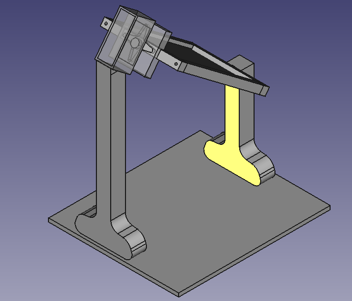
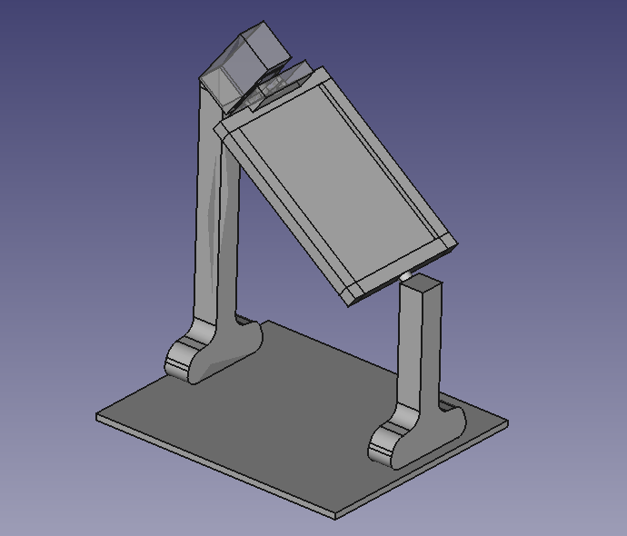

En esta tarea diseñamos las diferentes partes de un prototipo de seguidor solar, partiendo de uno de los diseños de la tarea anterior, mejorándolo o combinando elementos de distintos diseños previos. Representamos el diseño mediante modelado 3D y lo preparamos como paso previo a su construcción real.
El diseño se puede ver en este archivo.

